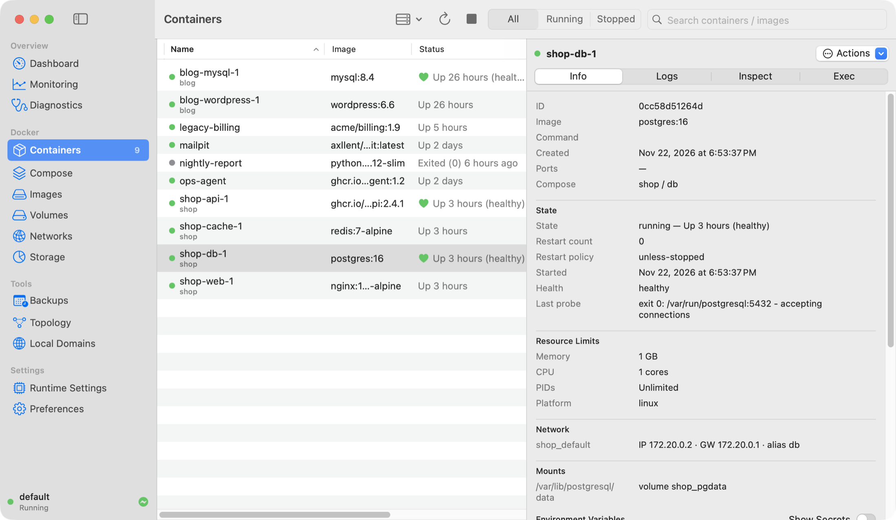
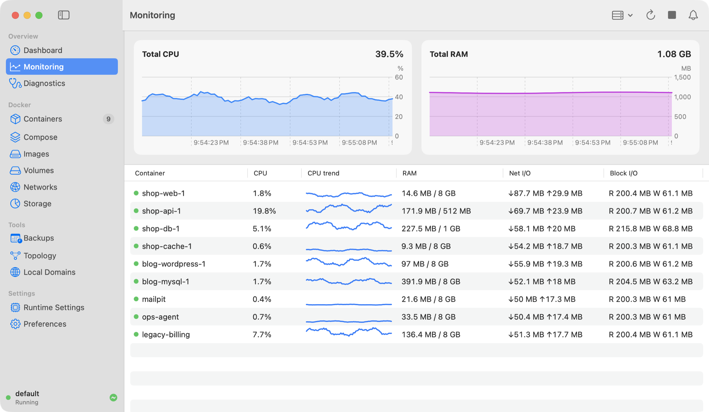

Mọi màn hình cần dùng, trong một sidebar.
Nhóm đúng như trong app. Các màn hình Docker gọi thẳng Docker Engine API qua socket của Colima, nên nhanh và không cần cài thêm công cụ.
Cẩn thận với dữ liệu của bạn.
Một công cụ container có thể xoá cả database chỉ bằng một cú click. ColimaX được làm để điều đó không xảy ra.
- Thao tác phá huỷ luôn hỏi trướcXoá, prune và dừng VM đều cần xác nhận. Restore database hay thu nhỏ disk yêu cầu gõ đúng tên.
- Backup tin cậy đượcVolume được lưu thành
.tarkèm manifest SHA-256, và mọi bản backup đều được kiểm trước khi restore. Dump MySQL, MariaDB, PostgreSQL và Redis chạy ngay trong container, nên thông tin đăng nhập không ra khỏi đó. - Secret luôn được cheMật khẩu và token trong biến môi trường bị che cho đến khi bạn chọn hiện.
- Security audit chỉ đọcChỉ ra container privileged,
docker.sockbị mount, host network và port mở ra mọi interface, mà không thay đổi gì.
Native, không cần cài thêm gì.
- SwiftUI, không phụ thuộcViết bằng Swift 6 với strict concurrency. Không Electron, không kèm runtime, không package bên thứ ba.
- Làm cho Apple SiliconHiểu profile Colima, VZ, virtiofs và Rosetta, và cảnh báo khi image phải chạy giả lập.
- Luôn cập nhậtTheo dõi Docker events và thư mục Colima, nên cửa sổ đổi ngay khi có gì thay đổi.
- Tiếng Anh và tiếng ViệtTheo ngôn ngữ hệ thống, hoặc chọn trong Tuỳ chọn.
Cài đặt
Chưa có bản tải về đã ký, nên hãy build app từ mã nguồn. Mất vài phút.
-
Cài Colima và Docker
Nếu bỏ qua bước này, Setup Assistant trong ColimaX sẽ liệt kê những gì còn thiếu và chạy lệnh giúp bạn sau khi bạn xác nhận.
brew install colima docker docker-compose -
Build app
Cần bộ công cụ Swift 6 đi kèm Xcode.
git clone https://github.com/trongcong/colimax.git cd colimax scripts/build-app.sh -
Mở app
Copy vào Applications để thông báo và mở cùng máy hoạt động.
cp -R build/ColimaX.app /Applications/ open /Applications/ColimaX.app
Yêu cầu
- macOS
- 14 Sonoma trở lên
- Máy Mac
- Apple Silicon (M1 trở lên)
- Colima
- Bắt buộc, dùng runtime docker
- docker CLI
- Chỉ cần cho màn hình Compose và mở shell trong Terminal
- Trivy hoặc Docker Scout
- Tuỳ chọn, để quét lỗ hổng image